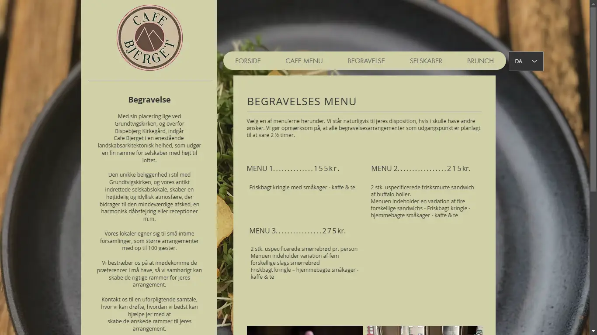

Herunder ses hvad jeg har lært igennem mit først semester som MMD
student.
Opdelt i de 6 temaer vi har haft, vises der her hvad jeg har lært
såvel som links til de relevante projekter for hvert respektivt
tema.
Introugen - ikke meget at sige, andet end jeg blev introduceret til
min klasse, samt blev orienteret om det mest basale.
I
denne uge fik jeg først oprettet mit domæne,
magdesigns.dk, som du sandsynligvis
læser denne side på. (Fun fact: Kom til at kludre med bestilling af
mit domæne, så jeg kom til at bestille to: dette, og et andet som
hed MKdesigns, hvilket jeg nu har fjernet.)
Filmprojekt
Som en sjov introopgave blev jeg sat i en tilfældig gruppe, hvor vi
skulle lave en video! Vi baserede den på introen af serien "The
Office", men vi var, til vores skuffelse, ikke den eneste gruppe der
kom med den idé.
Tema 2 - Grundlæggende web
Tema 2 - Grundlæggende web
Nu begynder undervisningen rigtigt! Her blev jeg først bekendt med
HTML og CSS-kode, samt teori mm.
Simpel kodning
Jeg har i dette tema lært om hvordan man strukturer sin hjemmeside,
hvordan man skriver i HTML samt hvordan man bruger CSS til at bla.
style og lave mobilversion af en side via mediaqueries. Udover dette
lærte jeg optimale filformater til hjemmesider f.eks at bruge .webp
frem for andre billedformater.
Min første side uploadede jeg i dette tema - Dette var
visitkortøvelsen, som kan ses
her.
Derefter lærte jeg om styling - hvordan man styler samt laver
mobilversion af en side, som kan ses
her
Nedendunder er eksempler på kode, som er taget fra førnævnte
mobilside:
Her ses kode som kun gælder når skærmen (eller vinduet) er under
den vises i 800 pixels i bredden
Teori
Her lærte jeg også om basal designteori, såsom f.eks
gestaltprincipper, som vises herunder:
Loven om nærhed: Siger at ting, som er grupperet tæt
på hindanden opfattes som at være en del af én helhed. Betragt f.eks tekstafsnit på denne side, hvordan de klumper sig
sammen i diskrete "bokse" som hver har deres eget forklarende
formål.
Loven om lighed: Siger at ting, som er sturktureret
som, eller ligner hindanden opfattes som at være af samme
slags. Betragt f.eks koden ovenover, og hvordan den er fremvist i
bestemte bokse med en bestem skrifftype.
Loven om lukkethed:
Siger at ting, som er lukket af fra resten af billedet syntes af
danne deres egen gruppe. Betragt f.eks hvordan sektionen som denne tekst er en del af en
drop-down boks - betragt igen fremvisningen af koden
ovenfor.
Loven om kontinuitet:
Siger at ting som er placeret langs en kontinuerlig linje eller
kurve anses for at være relaterede.
Tema 3 - Grundlæggende UX/UI
Tema 3 - Grundlæggende UX/UI
Her begyndte det at blive seriøst - I dette tema lærte vi en masse,
om dels research og kodning. Udover dette var temaets opgave et
såkaldt "emnesite", hvor vi til min glæde selv skulle bestemme hvad
indholdet skulle være. I denne process lærte jeg blandt andet
hvordan man planlægger, laver research og mockups i Programmet
figma. Jeg vil herunder redegøre for hvad jeg har lært i dette tema
ud fra udviklingen af mit emnesite.
Da vi i begyndelsen af temaet blev informeret om temaopgavens natur,
vidste jeg med det samme hvad emnet i mit emnesite skulle være.
Jeg var, til den tid vi fik opgaven, dybt fordybet i en meget
niche og nørdet hobby: At
modificere
rumsimulations programmet
SpaceEngine
så jeg kunne lave mit eget
fiktionelle solsystem. Det er dette solsystem (kaldet Heartha Systemet) som mit emnesite
fremviser som emne, såvel som hvordan jeg lavede det.
Brainstorm
Først brainstormede jeg idéer til min side, dens målgruppe og
design. Dette gjorde jeg i en figjam fil i Figma, som du kan
udforske herunder:
Ud fra denne process kom jeg til nogle få konklusioner.
Målgruppen
var svær at tyde da jeg havde valgt sådan et niche emne, men jeg
endte således med denne beskrivelse af den:
Nørdede folk; teknisk begavede
Aldersgruppe fra ~16 - 50år
Interesseret i videnskab, det ydre rum og 'worldbuilding''
Æstetisk Interesseret (Med dette menes, at en stor del af at lave et fiktionelt
solsystem uundgåeligt er det visuelle aspekt - udseendet af de
diverse planeter og måner. Derfor ville jeg påstå at målgruppen
også ville have en interesse i emnet fra en visuel-kunstnerisk
vinkel.)
Ud fra denne redegørelse af min målgruppe har jeg også skrevet nogle
'user stories' - Historier fra hypotetiske medlemmer af målgruppen
som redegør for hvorfor de ville bruge siden. User stories består af
tre dele:
Den første del beskriver den hypotetiske bruger: ("Som X..")
Den anden del består af hvad brugeren vil bruge produktet (i dette
tilfælde min side) til: ("...vil jeg...)
Hvorefter den og sidste del beskriver hvorfor: ("...så jeg...")
Herunder er mine user stories:
User story 1
"Som sci fi worldbuilder
Vil jeg finde eksempler på worldbuilding af solsystemer
Så jeg kan få tips og inspiration til min verden"
User story 2
"Som æstetisk interesseret
Vil jeg gerne finde online kunst
Så jeg kan nyde det"
User story 3
"Som ny begyndende SpaceEngine modder
Vil jeg gerne finde et walkthrough a modding processen
Så jeg kan lære at lave mit eget system"
Baseret på denne målgruppe begyndte jeg derefter at skitsere sidens
design og indhold. Designmæssigt har jeg fremfundet tre værdi-ord
som sidens design helst skulle udstråle:
Intelligent Siden skal værdsætte brugerens intelligens
- Den skal ikke fordumme indholdet, da min brugertype sansynligvis
allerede har en nørdet interesse for de relevante emner og derfor
er bekendt med meget af indholdet.
Encyklopædisk Siden skal præsentere informationen om
Heartha systemet som var det en encyklopædisk artikel om noget der
eksisterer i virkeligheden. På denne måde fremvises det diagetisk,
så brugeren bliver fordybet mere i narrativet og min
'worldbuilding'.
Udstillende Da en vigtig del af projektet er det
visuelle burde meget plads benyttes til at fremvise Heartha
systemet med billeder. "Galleri-agtigt" kunne man bruge synonymt
med dette værdi-ord; siden burde være dels encyklopædi, dels
kunstgalleri.
Style-tile og prototype
Efter jeg havde redegjort for sidens basale grundsætninger i
research-fasen kunne jeg gå igang med at skitsere designet. Det
først jeg gjorde var at lave et "style-tile" i Figma som ville
redegøre for hjemmesidens stil. Herunder ses mit endelige style-tile
som jeg endte op med at bruge:
Bagefter besluttede jeg at lave en 'brugertest' på dette styletile,
hvor jeg fik resten af klassen til at vurdere hvor godt det er:
Virker designet intelligent?
Hvor 1 er helt uenig og 7 er helt enig
Virker designet informerende?
Hvor 1 er helt uenig og 7 er helt enig
Er designet futuristisk?
Hvor 1 er helt uenig og 7 er helt enig
Jeg besluttede mig at gå videre med denne style-tile, da jeg syntes
at feedback var tilstrækkeligt godt.
Hi-Fi Prototype
Baseret på dette lavede jeg min Hi-Fi prototype af siden, som en
slags guide-line til hvordan den endelige side skal se ud. Jeg
vælger ikke at embedde prototypen direkte, da jeg bekymrer mig for
at siden allerede lagger for meget med de figma embeds jeg allerede
har tilføjet; klik dog nedenunder for at se:
Så begyndte kodningen! Måske ikke så meget at sige her - jeg var
måske lidt for ambitiøs med min side, til det punkt JavaScript var
nødvendigt før jeg havde lært sproget. Heldigvis kunne ChatGPT
hjælpe mig her! (Hvilket er helt fair skulle du spørge mig, vi havde
jo ikke haft om JS før da jeg kodede denne side.)
Hvis jeg skulle fremvise noget kode, kunne jeg vise noget CSS om
hvordan jeg f.eks stylede tekstbokse til have et glas-agtigt
udseende samt hvordan jeg fik min header til at sidde på venstre
side af skærmen i stedet for toppen.
I dette tema lærte jeg om animation og JavaScript, såvidt om at
skabe vektor-illustationer i Adobe Illustrator. Dette lærte vi får
det meste igennem temaets projekt, som handlede om at lave
programmere et spil i JavaScript med grafik hjemmelavet i
Illustrator.
Udviklingen af mit spil var kaotisk og uplanlagt. Denne organiske
fremgangsmetode virkede godt, dog den er lidt svær at dokumentere
her, grundet dens uplanlagte og spontane natur.
Research
Da vi først blev introduceret til temaet summede idéer rundt i mit
hovede om potentielle spil. Før jeg havde skrevet noget ned, havde
jeg inden for en halv time allerede forskellige spil idéer planlagt
i mit hovede. Dog blev disse hurtigt skudt ned, da jeg lærte at
mulighederne var meget mere begrænsede end jeg havde håbet. Dette
fangede mig i shock, og jeg skitserede hurtigt en spil idé på papir
baseret på undervisernes krav. Denne hurtige idé var baseret på det
lingvistiske
Bouba-Kiki
fænomem. Idéen var, at abstrakte former ville falde ned fra toppen,
nogle former skarpe (Kiki) og andre bløde (Bouba). Når en Bouba
bliver trykket fås et point, og når en Kiki bliver trykket mistes et
liv. Spillet vindes, hvis man får nok point inden en bestemt tid har
gået uden at have miste alle sine liv samtidig.
Bouba (+1 point)
Kiki (-1 liv)
Gul Bil idéen
På et tidspunkt fik jeg en bedre idé: Da en af kravene for vores
spil betød at spil-elemnterne stort set skulle køre på skinner, kom
jeg i tanke på biler der kører fast i deres baner på en motorvej. Ud
fra denne tænkning, tænkte jeg på en gammel leg kaldt "gul bil"
spillet blandt mine kammerater da jeg voksede op. Hvis I ikke
allerede ved det, spillet går ud på at observere forbigående biler
og slå ens kammerat på skulderen samt eksklamere "Gul bil!" hvis man
har spottet en gul bil. Denne idé endte med at være den jeg baserede
mit spil på. Jeg bedyndte derefter at skitsere bil-relaterede assets
på papir som jeg senere ville trace over i Illustrator. Alt dette er
også dokumenteret
her
på projektets egen
hjemmeside.
Assets
Jeg åbnede derefter disse skitser i Illustrator, og begyndte at
tegne over dem med pen værktøjet. Jeg havde heldigvis haft erfaring
med Illustrator før som kunne hjælpe mig, men jeg var dog helt nyt
tik pen-værktøjet, så noget nyt lærte jeg. Jeg viser to assets
nedendunder - resten kan ses på temasidens
interne assetliste.
Asset for den "Gule bil", som man skall klikke på for at få
point
Samlet asset for spillets nedtællende timer
Udover dette havde jeg også lånt en mikrofon fra KEA, som jeg brugte
til at optage et par lydeffekter med. Disse kan også findes på
temasidens
interne assetliste.
Kodning
I dette tema blev jeg introduceret til JavaScript og Git.
Git tillod mig at lave forskellige versioner af mit projekt, så hvis
kom jeg til at ødelægge spillet uden at kunne fixe det ville jeg
kunne gå tilbage til en tidligere version.
Med JavaScript lærte jeg hvordan man programmerer funktionalitet ind
i en hjemmeside udover hvad der er muligt med blot HTML ig CSS. Jeg
vil nedunder fremvise to dele af min JS kode fra spillet for at
belyse lidt af hvad jeg har lært:
Her vises en del fra toppen af mit spils JS kode, hvor der
defineres nogen konstanter (const). Hvad dette gør er at jeg kun
behøver at vælge et element en gang og definere den som en
konstant, hvorpå denne konstant kan bruges i koden i stedet for
at vælge elementet hver gang jeg skal gøre noget ved det.
Her vises et eksempel på en funktion. Når denne funktion er
igangsat starter den timeren med at give en klasse på mit
timer-element som indeholder en animation. Udover den nye klasse
tilføjes der også en såkaldt 'Event Listener' som igangsætter
funktionen stopSpillet() når timerens animation er færdig. Der
igangsættes også nogle andre funktioner som også er vigtige for
spillets funktion.
State-machine diagram
Vi skulle, før vi havde kodet vores spil lave et såkaldt 'state
machine' diagram, som kortlægger programmets struktur for at hjælpe
med at overskue kodningen. Jeg fik dog vendt om på prioriteterne, og
dette state-machine diagram er baseret på det færdige spil som
allerede er kodet i stedet for den anden vej rundt.
Endelige produkt
Jeg var egentlig ret glad for mit endelige produkt! Visuelt, og
kodemæssigt, i det mindste. Selve spillet er, i min mening, for nemt
og langtrukkent til at ikke at være kedeligt. Vil alligevel
opfordrer jer til at prøve det!
Dette tema introducerede os til indholdsproduktion samt en forsmag
på at arbejde med klienter i erhvervslivet. Ud over dette havde vi
vores fik vi også vores første seriøse gruppeopgave i dette tema.
Hvis jeg skulle beskrive dette tema i retrospekt, ville jeg sige at
temaet først og fremmest handlede om samarbejde og kommunikation. Om
det er mellem en virksomhed, en klient man skal lave indhold for
eller indbyrdes blandt ens team - Vi skulle her øve os hvordan man
forholdt sig selv til andre i det professionelle liv.
I den første opgave blev vores gruppe på fire delt op i to mindre
grupper, hvor vi var to hver. Opgaven gik ud på at finde et menneske
med en passion og filme et interview med dem om den førnævnte
passion. Efter optagelserne var færdige skulle derefter individuelt
arbejde med at hver lave en video samt en hjemmeside baseret på
optagelserne.
Optagelse af video
Mig og min makker skulle først vælge et menneske som opgavens fokus.
Jeg havde originalt tænkt mig at spørge min farfar som er
passioneret om hans modeltogbane, men dette endte ikke op med at
blive til noget. Til sidst spurgte vi vores klassekammerat Rosalina,
som hjælpsomt lod sig være vores opgaves fokus. Før vi optog videoen
lånte vi en ekstern mikrofon og en tripod til min makkers telefon.
Der blev aftalt en dato, og på den tog vi sammen over til Rosalina's
lejlighed hvor vi begyndte at optage vores video.
Her ses et billede af mig, som roder med min telefon som er
forbundet til den lånte mikrofon. Selve videoen bliver optaget på
min makkers telefon, men vi brugte lyden som min telefon optagede
igennem den lånte mikrofon.
Jeg redigerede derefter min video i Adobe Premiere Pro. Check den
ud!
Video
Kodning af hjemmesiden
Bagefter kodede jeg hjemmesiden som skulle fremvise videoen. I denne
del af opgaven lærte jeg hvordan man embedder YouTube videoer med
<iframe> tagget samt hvordan man indsætter videoer direkte med
<video> tagget. Siden skulle følge to bestemte wireframes for
mobil og desktop version som jeg fulgte. I toppen af siden skulle
jeg lave en såkaldt 'hero' animation i Adobe After Effects og
derefter indsætte den via en service kaldt Lottiefiles. Detsværre
kunne jeg ikke indsætte min animation, da jeg alt for sent fandt ud
af at min After Effects animation ikke var kompatibel med
Lottiefiles, så på siden ses kun en placeholder sektion som jeg
dengang havde ment skulle være midlertidig.
Passionssidens stil
Jeg havde egentlig ikke forberedt min stil i programmer som Figma -
jeg havde hele tiden haft en idé om hvordan siden skulle se ud som
jeg baserede på min oplevelse af Rosalina's personlighed samt
æstetiske følsomheder. Jeg baserede stilen af videoen på den
fornemmelse og jeg byggede videre på den stil når jeg senere skulle
style mit passionssite.
Nu var det tid til det rigtige gruppe projekt, som alle fire i vores
gruppe skulle arbejde sammen på. Denne opgave handlede om at finde
en virksomhed og gendesigne deres hjemmeside. Jeg lærte meget i
denne opgave - Bla. hvordan man bruger
Trello til at
planlægge med sin gruppe, og hvordan man bruger GitHub til at
arbejde sammen om at kode.
Café Bjerget
Heldigvis kendte en af mine gruppekammerater til en
virksomhedssejer, som lod os redesigne deres hjemmeside. Café
Bjerget er en smørrebrødscafé på Bispebjerg, som bla. fokuserer på
service til begravelser.
Deres
officielle hjemmeside, som endu er i brug mens jeg skriver dette (04/01/2025), har nogle
få problemer: Bla. er den ikke responsiv til mobilvisining og er
plaget af et potentielt forvirrende layout samt andre diverse design
fejl. I tilfælde de siden jeg skrev dette har opdateret deres
hjemmeside, kan et screenshot af den originale side ses herunder:

Min del
For det meste, delegerede jeg mig selv til kode og design arbejde
fordi det er det jeg ved jeg er bedst til. Og fordi disse dele af
processen var mit fokus, er det om dem jeg vil uddybe.
Farver og CSS variabler
Efter dialog med virksomheden, blev vi gjort opmærksomme på nogen
krav de ønskede for vores design. En af dem var, at vi skulle
genbruge farverne allerde anvendt i deres branding. Vi fik gemt
disse farver som stile i vores Figma dokument, samt senere indsat af
mig i vores CSS som variabler. Nedunder vises et eksempel på hvordan
variabler laves og bruges I CSS, samt de farver vi brugte på siden:
At definere variabler
/*Variablerne defineres i :root*/
:root {
--farve1: #12344578;
--border1: 30px;
}
/*Variablerne kan nu sættes på et
element*/
.element1{
background-color: var(--farve1);
/* Betyder det samme som:
background-color: #1234457; */
border-radius: var(--border1);
/* Betyder det samme som:
border-radius: 30px; */
}
Farve-variabler i vores kode
--primary:
white;
--secondary:
#cbbc9f;
--tertiary:
#624f41;
--fjerdefarve:
#818c30;
--femtefarve:
#696969;
--sjettefarve:
#333333;
Notér: Ikke alle er variabler blev brugt i vores endelige
design
Logo gendesign
Mens de andre fra min gruppe var ude og interviewe de ansvarlige for
virksomheden, blev jeg sat til at gendesigne virksomhedens logo,
hvilket jeg starks gjorde i Illustrator. Jeg ville have et logo som
egentlig var simpelt, dog samtidigt representerede Caféens navn: Mit
design endte med at være et slags dampende bjerg med et håndtag, som
både ligner en vulkan (en type bjerg) og en kaffekop. Jeg lavede to
versioner - En med og uden text. Flere varianter blev lavet af disse
to af andre gruppemedlemmer, og alle varianter kan ses i vores Figma
dokument herunder: